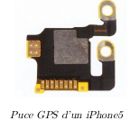

Transmission des coordonnées : trames NMEA
Préambule
Les différents composants d’un appareil électronique (ex : un téléphone mobile)communiquent par des protocoles normalisés. Ainsi, les puces GPS qui effectuent les calculs de positionnement envoient leurs résultats présentés suivant une trame normalisée : la trame NMEA 0183. Le développeur d’une application (par exemple : la galerie photo, un jeu de capture de Pokémons...) souhaitant utiliser la position de l’utilisateur sait qu’il pourra exploiter cette trame pour en déduire les renseignements sur la position.
Activité
Travail préparatoire
|
Android : NMEA Tools ou GPS Nmea Lite iOS : NMEA Gps Ces applications permettent d’afficher les trames NMEA que génère la puce GPS du téléphone. On voit ainsi que les trames sont d’abord incom- plètes (elles ne contiennent pas les coordonnées), puis deviennent complètes dès que les signaux de 4 satellites ont été analysés. |
 |
Documents
Tous les smartphones commercialisés ces dernières années sont dotés d’une puce GPS et c’est grâce à celle- ci que votre téléphone peut être géolocalisé, c’est-à-dire que vous pouvez connaître sa position géographique. Localisation, cartographie et mobilité L’objectif de cette activité est d’appréhender le fonctionnement de ce dispositif.
Documents 1 : la norme NMEA 0183 CIl existe plus d’une trentaine de trames GPS différentes. Le type d’équipement est défini par les deux caractères qui suivent le $.Par exemple :
$GPGGA,064036.289,4836.5375,N,00740.9373,E,1,04,3.2,200.2,M„„0000*0E est une trame GPS de type GGA. Les deux premiers caractères après le signe $ (talker id) identifient l’origine du signal. Les principaux préfixes sont :
- BD ou GB - Beidou ;
- GA - Galileo ;
- GP - GPS ;
- GL - GLONASS.
La trame GGA est très courante car elle fait partie de celles qui sont utilisées pour connaître la position courante du récepteur GPS. Dans l’exemple suivant :
$GPGGA,064036.289,4836.5375,N,00740.9373,E,1,04,3.2,200.2,M„„0000*0ENous disposons de :
- $GPGGA : Type de trame ;
- 064036.289 : Trame envoyée à 06h 40m 36,289s (heure UTC) ;
- 4836.5375, N : Latitude Nord : 48°36.5375’ (DM) = 48,608958° (DD) = 48°36’32.25" (DMS) ;
- 00740.9373,E : Longitude Est : 7°40.9373’(DM)= 7,682288° (DD) = 7°40’56.238" (DMS) ;
- 1 : Type de positionnement (le 1 est un positionnement GPS) ;
- 04 : Nombre de satellites utilisés pour calculer les coordonnées ;
- 3.2 : Précision horizontale ou HDOP (Horizontal dilution of precision)
- 200.2,M : Altitude 200,2, en mètres ;
- „ „ ,0000 : D’autres informations peuvent être inscrites dans ces champs
- *0E : Somme de contrôle de parité, un simple XOR sur les caractères entre $ et *3
Source : d’après https://fr.wikipedia.org/wiki/NMEA_0183
Document 3 : les notations DMS, DM et DDLes coordonnées géographiques sont traditionnellement exprimées dans le système sexagésimal, parfois noté « DMS » : degrés ( ° ) minutes (') secondes ("). L’unité de base est le degré d’angle (1 tour complet = 360°), puis la minute d’angle (1° = 60'), puis la seconde d’angle (1° = 3 600"). Les sites de cartographie en ligne utilisent les DD dans leurs urls :
Source : d’après https://fr.wikipedia.org/wiki/Coordonnéesgéographiques
Questions
Vous rendrez un document texte sur lequel figurera toutes les réponses aux questions suivantes.
- Vérifier par un calcul que la latitude 48°36.5375’ (DM) du document correspond à 48°36’32.25" (DMS).
- Rechercher sur internet, la définition de l’heure UTC. Quelle est la différence (en heure) entre l’heure que nous voyons sur nos montre et l’heure UTC.
- On donne la trame NMEA suivante, obtenue à partir d’un enregistrement sur un téléphone mobile avec l’application NMEA tool. $GNGGA,123730.00,4850.632151,N,00221.472929,E,1,12,0.9,24.0,M
- A quelle heure UTC ce relevé a-t-il été effectué ?
- Combien de satellites ont été utilisés pour cette mesure ?
- Déduire les coordonnées géographiques, en degré décimaux, de la trame enregistrée.
- Vérifier la position sur le site https://www.geoportail.gouv.fr/. Où ce relevé a-t-il été effectué ?
- Grâce à l’application NMEA tools (Enregistreur) ou sur le site https://nmeagen.org/, à l’endroit que vous désirez, lire la trame NMEA GGA générée. Pour plus d'information concernant le site NMEAgen.org, veuillez consulter lien)
- Écrire la trame lue ;
- En déduire l’heure,la longitude et la latitude (DM).
- Convertir ces deux dernières données en degré décimaux.
- Grâce à python et à la bibliothèque folium, générer une carte. La mettre dans le compte-rendu.
import folium
maCarte= folium.Map(location=[latitude_DD,longitude_DD],zoom_start=15)
maCarte.save('Carte.html')